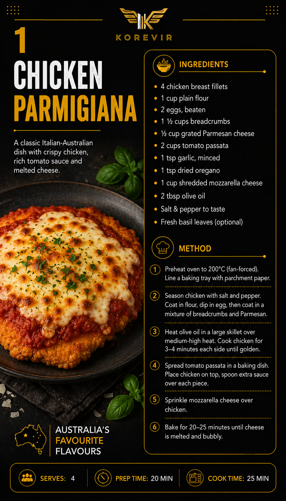

Chicken Parmigiana
A crispy golden chicken breast topped with rich tomato sauce and melted mozzarella cheese. One of Australia's most iconic comfort foods.
View Full Recipe →Premium Australian Recipe Collection
Discover Australia's most loved recipes, beautifully crafted for your KOREVIR Kitchen. From comforting classics to modern favourites, cook with confidence using easy step-by-step instructions.

A crispy golden chicken breast topped with rich tomato sauce and melted mozzarella cheese. One of Australia's most iconic comfort foods.
View Full Recipe →